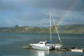
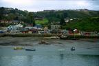
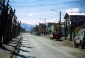

| Arrivée à Santiago |

|
Vendredi 3 août -
On part pour Najita (se prononce narita), l’aéroport de Tokyo. Il faut une
heure pour y aller en train.
Lire la suite ...
|
| Santiago les colines |
|
|
Lundi 6 août -
Santiago est dominée par 2 colines. Santa Lucia dans le centre ville et San
Cristobal à un kilomètre.
Lire la suite ...
|
| Villarica |
|
|
Samedi 11 août -
Villarica. On passe uune bonne nuit réparatrice dans une hospedaje tenue par
une dame bien sympathique.
Lire la suite ...
|
| Valdivia |
|
|
Lundi 13 août -
Il pleut des trombes. Tant pis pour le volcan, la météo a prévu sale temps
pour toute la semaine et bien que le monsieur nous ait rassuré en nous annonçant
qu'il prête des capes de pluie, on a aussi abandonné la balade à cheval dans
le parc national.
Lire la suite ...
|
| Chiloé |
|
|
Mercredi 15 août -
C'est le 15 août, c'est férié. Internet à 500 pesos l'heure est fermé.
Lire la suite ...
|
| Le parc national de Cucao |
|

|
Samedi 18 août -
Aujourd'hui, c'est pour nous que le temps s'est arrêté. Du coup on a raté le
bateau pour Cucao sur la côte ouest.
Lire la suite ...
|
| La croisière s'amuse |
|

|
Lundi 20 août -
On prend le bus et on retrouve Marylin et Christian, une américaine et un hollandais
qu'on avait croisés dans le parc national sous la pluie. Ils descendent eux
aussi vers le sud, à Puerto Natalès mais en bateau.
Lire la suite ...
|
| La Patagonie-Puerto Natales |
|
|
Vendredi 24 août -
Depuis 6h00, on a quitté le Golfe sans encombre. Quand on pense à tout ce qu'on
voit à la télé sur les navigateurs, le Cap Horn et tout et tout...
Lire la suite ...
|
| Torres Del Paine |
|
|
Dimanche 26 août -
En route pour le merveilleux parc de Torres Del Païne. La piste qui y mène
nous fait traverser de grands espaces désolés de steppe aride.
Lire la suite ...
|
| Le fort de Punta Arenas |
|

|
Mardi 28 août -
Temps magnifique qui fait ressortir le bleu éclatant du lac de Puerto Natales
et le blanc des montagnes derrière. A 15h00, on se traîne péniblement à l'arrêt
de bus.
Lire la suite ...
|
| Terre de Feu |
|
|
Jeudi 30 août -
En Patagonie et en Terre de Feu, les premiers habitants, les natifs, étaient
les Alakalufs, les Onas, les Yamanas et les Tehuelches du sud encore appelés
géants de Patagonie en raison de leur grande taille. Les éleveurs étrangers
sont arrivés, ont clôturé pour élever leurs troupeaux de moutons.
Lire la suite ...
|
| Punta Arenas |
|
|
Vendredi 31 août -
Heidi et Ludo sont entrés comme des sauvages dans notre chambre ce matin à
6h00 pour nous dire au revoir. Ils repartent en France, finies les vacances
pour eux.
Lire la suite ...
|